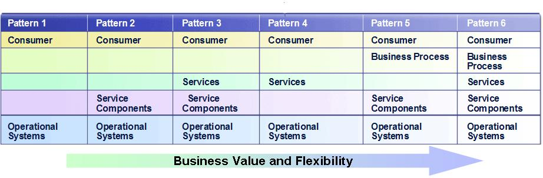

| Practice: Component Based System Architecture |
 |
|
The purpose for this practice are:
This practice also contains Realization capability patterns in SOMA that are performed and repeated through the SOMA life cycle and are not just performed during Realization. The purpose for each of the capability patterns are described below. The purpose of Pattern Selection as an ongoing activity in SOMA is:
The purpose of Establish Realization Decisions as an ongoing activity in SOMA is:
The purpose of Detail SOA Reference Architecture as an ongoing activity in SOMA is:
The purpose of Technical Feasibility Exploration as an ongoing activity in SOMA is:
|
This practice designs the subsystems that are identified and mapped to the functional areas during Functional Area Analysis and defines the composition of each of the subsystems into its constituent component and then specifies these component by defining their interfaces. This practice also makes realization and architectural decisions about the services and the overall solution. How Subsystem bridges Business and IT? In Functional Area Analysis, subsystems are identified for each of the functional areas. SOMA employs traditional component modeling principles but adds more rigor to the functional architecture by aligning with the business. The first step in component modeling technique is Component Identification, where candidate components are identified based on principles of partitioning, layering, and structuring. In SOMA, Component Identification is performed in two places: First, Component Identification is performed in Functional Area Analysis where subsystems are identified that are mapped to the functional areas, which is a business concept or construct. Second, then Component Identification is again performed in Subsystem Analysis where the subsystems are further decomposed into its constituent components defining the composition of the subsystem. The detailed structure of the subsystems are defined in terms of the constituent components, namely, service component, functional component, and technical components. The second step in component modeling is Component Specification which is a business-as-usual activity and it is applicable for both SOA and non-SOA projects. The only step that you may skip in Component Specification for a non-SOA project is assigning or allocating services to components. On the other hand, we still need to make placement of the functionality to the components in a non-SOA project which is similar to allocating services to components. Subsystem AnalysisSubsystem Analysis decomposes the subsystems identified during Functional Area Analysis into their constituent service, functional and technical components.
Once we make the transition from the business domain (functional areas) to the IT domain, we map the functional areas
defined by the former to subsystems, their IT counterparts in the IT domain. Subsystem Analysis (SSA) decomposes the
subsystems identified by Functional Area Analysis into their constituent service, functional and technical
components. When identifying subsystems, take into considerations the following aspects:
Component SpecificationAfter the boundaries of the service components, their functional and technical components and services have been identified through subsystem analysis, the detailed structure of Enterprise Components viz Service, Functional, Technical Components are specified in Component Specification (CS). One of the problems that large frameworks have always encountered is that they tend to build and use larger object graphs. The dependency between fine-grained individual objects increases the complexity of the usage and reuse of the framework. This is often a barrier to entry as many failed industry frameworks have testified. The typical OOAD approaches implicitly suggest the common practice of creating larger object models (class diagrams). In SOMA, we use Functional Area Analysis to define and agree on a set of business related boundaries for subsequent components. As we transition into the IT domain, we select the subsystems that will provide the functionality for the functional areas as larger grained entities. We define the dependencies between them and design their internal structure. The key enhancement that SOMA offers in component modeling is that the initial scoping is done for something larger than an object,namely, Subsystem and then a systematic application of the object-oriented analysis and design is performed within the confines of the Subsystem. In Component Specification we describe the interface and high level attributes, internal flow/dependencies, structure and variations of Service Components in terms for fine grained components such as Functional and Technical Components. We also describe interfaces of Functional and Technical components. Also Service are assigned/placed to Service Component for realization. This is a key realization decisions.
Realization capability patterns in SOMA are not only applied in Realization phase, but also applied in early phases in
the SOMA lifecycle to build the realization of the solution on-hand gradually and continuously throughout the SOMA
lifecycle which is fractal in nature. Read more about fractal nature of SOMA method Pattern SelectionPattern Selection allows to leverage proven techniques, considerations, and best practices to address a specific solution problem and to help realize the services, components and flows. It enforces a quality delivery and reduce the cost and expedite the development process. The intent of this section of this lesson is not to describe the patterns in various domains There are patterns in the areas of Enterprise Service Bus or ESB design, Rule Analysis, and Information Services that may be are c. Realization DecisionsAs part of making Realization Decisions we make build versus buy versus transform kinds of decisions. This is not a straightforward build versus buy decision: other interesting options come into the picture. There are a number of alternatives to be considered relative to deciding how to realize services, namely, Build, Buy, Integrate, Transform, Subscribe, Outsource. Transformation uses a combination of techniques including business rules extraction to pull out a segment of functionality to be used independently for the realization of the components and services. Integrate is the wrappering of legacy functionality to achieve the to-be functionality; integration is invocation-based. Subscription is based on the availability of a publish-subscribe model in a message-oriented middleware context in which a consumer subscribes to the services provided by the provider. One of the other options is to outsource the functionality, for example, payroll functions, out to some other business. As B2B integration has become more common, this option is being used considerably. SOA Reference ArchitectureSOMA leverages IBM SOA Reference Architecture throughout the lifecycle. IBM SOA Reference Architecture has two views: First, the Solution View; second, the Middleware View. Solution View of the IBM SOA Reference Architecture is also called IBM SOA Solution Stack, S3. Read more two views of the IBM SOA Reference Architecture here. SOA Solution Stack also known as Solution View of IBM SOA Reference Architecture enables SOMA to define layered architecture for a solution: SOA or non-SOA. SOMA Method is built keeping in view the layered architecture. Layering offers key benefits in creating solutions. These benefits are: First, layers help make IT systems to be easily changed or extended and make them more portable. A change to a lower layer that does not affect its interface will require no change to a higher layer. For example, any J2EE compliant application server that conforms to the J2EE standard may be freely substituted without change to the application-level software. In general, changes to a layered software system that affect no interface are confined to a single layer. Second, layers provide Architectural Blueprint for constructing the system. Knowing the layers in which their software resides, developers know what services they can rely on in the coding environment. Layers may define work assignments for development teams, although this is not always the case. Third, layers help architects to communicate. In a large system, the number of dependencies among modules expands rapidly. Organizing the software into layers with interfaces is an important tool to manage complexity and communicate the structures to developers. Layers help with architects to analyze. They can be used for analyzing the impact of changes to the design. Fifth, layering can be strict or non-strict. A strict layering scheme means that the components can only use components in the same layer or layers immediately below them. A non-strict layering scheme means components can use components in the same or any lower layer. Note that as a general rule, however, components should not be allowed to use components in the upper layers. If components have dependencies on components in higher layers, then it becomes difficult to replace the upper layer components without having to change the lower level components. As we apply the various capability patterns in SOMA to identify, specify, realize, and implement the five fundamental constructs of service orientation, namely, services, flows or business processes, components, information, and rules and policies, we detail and populate the SOA references architecture to document and capture the architectural elements of each of the layers of the reference architecture. Detail SOA Solution Stack Layer, capability pattern in SOMA focuses on refining and providing detailed content for the specific layers of the SOA Solution Stack which is a Solution View of IBM SOA Reference Architecture.
Technical Feasibility ExplorationTechnical Feasibility Exploration is performed to select a set of representative services, corresponding to usage scenarios within the domain, to identify major architectural challenges that they present, and to identify a set of corresponding proof of concepts that are recommended to be implemented to exercise the architectural decisions in a subsequent realization phase. It is also performed to reduce risk and to analyze areas of unknown complexity. SOA Solution Stack, or S3, which is also known as Solution View of the IBM SOA Reference Architecture is leveraged in performing the Technical Feasibility Exploration in SOMA. The SOA Solution Stack is typically instantiated in six basic ways as depicted on the following diagram as Pattern 1 to Pattern 6. In Technical Feasibility Exploration, we first prioritize the services, we identify key usage scenarios for the services, and then we identify and select interaction patterns for each of the scenarios from Pattern 1 through 6 as depicted on the figure below. Then we map and group services to these interaction patterns, and then plan and define the proof of concept for each of these realization scenarios followed by actual implementation of the proof of concept. Also note that as you move from Pattern 1 to Pattern 6, it reflects increasing business value and flexibility from IT systems and also reflects the maturity of the organization.
 Solution TemplateEvery SOA engagement tends to have unique characteristics and each SOA solution is a hybrid of various solution types. SOMA has defined Solution Templates for various solution types as solutions accelerators from method perspective. Solution Template is a mechanism for extending a software engineering method to incorporate and combine multiple strategies and approaches for building an overall solution. Various realization strategies and constraints must be taken into account including: ISV or packaged applications in the operating environment or have been chosen strategically as an implementation platform; aspects of service, components and flows that must be custom built; aspects of the solution that should leverage existing legacy applications and create adaptors/connectors to tap into existing functionality.
|

| © Copyright IBM Corp. 1987, 2012 All Rights Reserved Property of IBM These materials are intended only for use as part of an IBM engagement |